사회조사분석사-2급 (2020-06-06 기출문제)
1과목: 조사방법론 I
1. 설문조사에 관한 설명으로 옳지 않은 것은?
- 일반적으로 자기기입식 설문조사는 면접설문조사보다 비용이 적게 들고 시간이 덜 걸린다.
- 자기기입식 설문조사는 익명성이 보장되기 때문에 면접설문조사보다 민감한 쟁점을 다루는데 유리하다.
- 자기기입식 설문조사는 면접설문조사보다 복잡한 쟁점을 다루는 데 더 효과적이다.
- 면접설문조사에서는 면접원이 질문에 대한 대답 외에도 중요한 관찰을 할 수 있다.
(정답률: 80%)

2. 사회조사의 유형에 관한 설명으로 옳은 것을 모두 고른 것은?
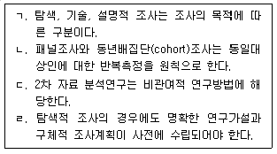
- ㄱ, ㄴ, ㄷ
- ㄱ, ㄷ
- ㄴ, ㄹ
- ㄹ
(정답률: 50%)
3. 다음 ( )에 알맞은 변수를 순서대로 나열한 것은?
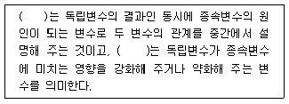
- 조절변수 - 억제변수
- 매개변수 - 구성변수
- 매개변수 - 조절변수
- 조절변수 – 매개변수
(정답률: 80%)
4. 다음에 열거한 속성을 모두 충족하는 자료수집방법은?
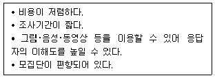
- 면접조사
- 우편조사
- 전화조사
- 온라인조사
(정답률: 85%)
5. 사후실험설계(ex-post facto research design)의 특징에 관한 설명으로 틀린 것은?
- 가설의 실제적 가치 및 현실성을 높일 수 있다.
- 분석 및 해석에 있어 편파적이거나 근시안적 관점에서 벗어날 수 있다.
- 순수실험설계에 비하여 변수 간의 인과관계를 명확히 밝힐 수 있다.
- 조사의 과정 및 결과가 객관적이며 조사를 위해 투입되는 시간 및 비용을 줄일 수 있다.
(정답률: 62%)
6. 다음에서 설명하고 있는 조사방법은?
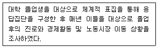
- 집단면접조사
- 파일럿조사
- 델파이조사
- 패널조사
(정답률: 79%)
7. 변수 간의 인과성 검증에 대한 설명으로 옳은 것은?
- 인과성은 두 변수의 공변성 여부에 따라 확정된다.
- ‘가난한 사람들은 무계획한 소비를 한다.’라는 설명은 시간적 우선성 원칙에 부합한다.
- 독립변수와 종속변수 사이의 인과관계는 제3의 변수가 통제되지 않으면 허위적일 수 있다.
- 실험설계는 인과성 규명을 목적으로 하지 않는다.
(정답률: 71%)
8. 다음 설명에 해당하는 기계를 통한 관찰도구는?
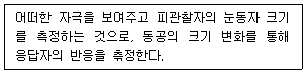
- 오디미터(audimeter)
- 사이코갈바노미터(psychogalvanometer)
- 퓨필로미터(pupilometer)
- 모션 픽처 카메라(motion picture camera)
(정답률: 61%)
9. 다음 ( ) 안에 알맞은 것은?
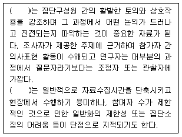
- 델파이조사
- 초점집단조사
- 사례연구조사
- 집단실험설계
(정답률: 70%)
10. 논리적 연관성 도출방법 중 연역적 방법과 귀납적 방법에 관한 설명으로 틀린 것은?
- 귀납적 방법은 구체적인 사실로부터 일반원리를 도출해 낸다.
- 연역적 방법은 일정한 이론적 전제를 수립해 놓고 그에 따라 구체적인 사실을 수집하여 검증함으로써 다시 이론적 결론을 유도한다.
- 연역적 방법은 이론적 전제인 공리로부터 논리적 분석을 통하여 가설을 정립하여 이를 경험의 세계에 투사하여 검증하는 방법이다.
- 귀납적 방법이나 연역적 방법을 조화시키면 상호 배타적이기 쉽다.
(정답률: 72%)
11. 변수에 대한 설명으로 틀린 것은?
- 경험적으로 측정가능 한 연구대상의 속성을 나타낸다.
- 독립변수는 결과변수를, 종속변수는 원인의 변수를 말한다.
- 변수의 속성은 경험적 현실의 전제, 계량화, 속성의 연속성 등이 있다.
- 변수의 기능에 따른 분류에 따라 독립변수, 종속변수, 매개변수로 나눈다.
(정답률: 80%)
12. 개인의 특성에서 집단이나 사회의 성격을 규명하거나 추론하고자 할 때 발생할 수 있는 오류는?
- 원자 오류(atomistic fallacy)
- 개인주의적 오류(individualistic fallacy)
- 생태학적 오류(ecological fallacy)
- 종단적 오류(longitudinal fallacy)
(정답률: 75%)
13. 연구유형에 관한 설명으로 틀린 것은?
- 순수연구 : 이론을 구성하거나 경험적 자료를 토대로 이론을 검증한다.
- 평가연구 : 응용연구의 특수형태로 진행중인 프로그램이 의도한 효과를 가져왔는가를 평가한다.
- 탐색적 연구 : 선행연구가 빈약하여 조사연구를 통해 연구해야 할 속성을 개념화한다.
- 기술적 연구 : 축적된 자료를 토대로 특정된 사실관계를 파악하여 미래를 예측한다.
(정답률: 59%)
14. 좋은 가설의 평가 기준에 대한 설명으로 가장 거리가 먼 것은?
- 경험적으로 검증할 수 있어야 한다.
- 표현이 간단명료하고, 논리적으로 간결하여야 한다.
- 계량화할 수 있어야 한다.
- 동의반복적(tautological)이어야 한다.
(정답률: 81%)
15. 질문지의 형식 중 간접질문의 종류가 아닌 것은?
- 투사법(Projective Method)
- 오류선택법(Error-Choice Method)
- 컨틴전시법(Contingence Method)
- 토의완성법(Argument Completion)
(정답률: 46%)
16. 경험적 연구의 조사설계에서 고려되어야 할 핵심적인 구성요소를 모두 고른 것은?
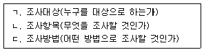
- ㄱ, ㄴ
- ㄱ, ㄴ, ㄷ
- ㄱ, ㄷ
- ㄴ, ㄷ
(정답률: 82%)
17. 다음과 같은 특성을 가진 자료수집방법은?
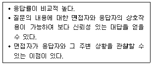
- 면접조사
- 전화조사
- 우편조사
- 집단조사
(정답률: 82%)
18. 횡단연구와 종단연구에 관한 설명으로 틀린 것은?
- 횡단연구는 한 시점에서 이루어진 관찰을 통해 얻은 자료를 바탕으로 하는 연구이다.
- 종단연구는 일정 기간에 여러 번의 관찰을 통해 얻은 자료를 이용하는 연구이다.
- 횡단연구는 동태적이며, 종단연구는 정태적인 성격이다.
- 종단연구에는 코호트연구, 패널연구, 추세연구 등이 있다.
(정답률: 79%)
19. 다음 사례에서 가장 문제될 수 있는 타당도 저해요인은?
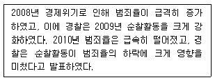
- 성숙효과(maturrntion effect)
- 통계적 회귀(statistical regression)
- 검사효과(testing effect)
- 도구효과(instrumentalion)
(정답률: 69%)
20. 사전-사후 측정에서 나타나는 사전측정의 영향을 제거하기 위해 사전측정을 한 집단과 그렇지 않은 집단을 나누어 동일한 처치를 가하여 모든 외생변수의 통제가 가능한 실험설계 방법은?
- 요인설계
- 솔로몬 4집단설계
- 통제집단 사후측정설계
- 통제집단 사전사후측정설계
(정답률: 52%)
21. 다음 중 사례조사의 장점이 아닌 것은?
- 사회현상의 가치적 측면의 파악이 가능하다.
- 개별적 상황의 특수성을 명확히 파악하는 것이 가능하다.
- 반복적 연구가 가능하여 비교하는 것이 가능하다.
- 탐색적 연구방법으로 사용이 가능하다.
(정답률: 53%)
22. 연구가설(reserch hypothesis)에 대한 설명으로 틀린 것은?
- 모든 연구에는 명백히 연구가설을 설정해야 한다.
- 연구가설은 일반적으로 독립변수와 종속변수로 구성된다.
- 연구가설은 예상된 해답으로 경험적으로 검증되지 않은 이론이라 할 수 있다.
- 가치중립적이어야 한다.
(정답률: 51%)
23. 설문조사로 얻고자 하는 정보의 종류가 결정된 이후의 질문지 작성과정을 바르게 나열한 것은?
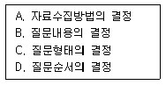
- A → B → C → D
- B → C → D → A
- B → D → C → A
- C → A → B → D
(정답률: 57%)
24. 우편조사시 취지문이나 질문지 표지에 반드시 포함되지 않아도 되는 사항은?
- 조사기관
- 조사목적
- 자료분석방법
- 비밀유지보장
(정답률: 82%)
25. 관찰자의 유형에 관한 설명으로 틀린 것은?
- 완전참여자는 연구 과정에서 윤리적 문제를 발생시킬 수 있다.
- 연구자가 완전참여자일 때는 연구대상에 영향을 미치지 않는다.
- 완전관찰자의 관찰은 피상적이고 일시적이 될 수 있다.
- 완전관찰자는 완전참여자보다 연구대상을 충분히 이해할 수 있는 가능성이 낮다.
(정답률: 75%)
26. 경험적으로 검증할 수 있는 가설의 예로 옳은 것은?
- 불평등은 모든 사회에서 나타날 것이다.
- 다양성이 존중되는 사회가 그렇지 않은 사회보다 더 바람직하다.
- 모든 행위는 비용과 보상에 의해 결정된다.
- 여성의 노동참여율이 높을수록 출산율은 낮을 것이다.
(정답률: 78%)
27. 다음 중 분석단위가 다른 것은?(오류 신고가 접수된 문제입니다. 반드시 정답과 해설을 확인하시기 바랍니다.)
- 65세 이상 노인층에서 외부활동 시간은 남성보다 여성에게 높게 나타난다.
- X정당 후보에 대한 지지율은 A지역이 B지역보다 높다.
- A기업의 회장은 B기업의 회장에 비하여 성격이 훨씬 더 이기적이다.
- 선진국의 근로자들과 후진국의 근로자들의 생산성을 국가별로 비교한 결과 선진국의 생산성이 더 높았다.
(정답률: 50%)
28. 실험연구의 내적타당도를 저해하는 원인 가운데 실험기간 중 독립변수의 변화가 아닌 피실험자의 심리적･연구통계적 특성의 변화가 종속변수에 영향을 미치는 경우에 해당하는 것은?
- 유발적 사건
- 성숙효과
- 표본의 편중
- 통계적 회귀
(정답률: 68%)
29. 면접원을 활용하는 조사 중 상이한 특성의 면접원에 의해 발생하는 편향(bias)이 가장 클 것으로 추정되는 조사는?
- 전화 인터뷰조사
- 심층 인터뷰조사
- 구조화된 질문지를 사용하는 인터뷰조사
- 집단 면접조사
(정답률: 69%)
30. 다음 중 특정 연구에 대한 사전 지식이 부족할 때 예비조사(pilot test)에서 사용하기 가장 적합한 질문유형은?
- 개방형 질문
- 폐쇄형 질문
- 가치중립적 질문
- 유도성 질문
(정답률: 71%)
2과목: 조사방법론 II
31. 특정 변수를 중심으로 모집단을 일정한 범주로 나눈 다음 집단별로 필요한 대상을 사전에 정해진 비율로 추출하는 표집방법은?
- 할당표집
- 군집표집
- 판단표집
- 편의표집
(정답률: 64%)
32. 신뢰도를 향상시키는 방법에 관한 설명으로 옳지 않은 것은?
- 중요한 질문의 경우 동일하거나 유사한 질문을 2회 이상 한다.
- 측정항목의 모호성을 제거하기 위해 내용을 명확히 한다.
- 이전의 조사에서 이미 신뢰성이 있다고 인정된 측정도구를 이용한다.
- 조사대상자가 잘 모르거나 전혀 관심이 없는 내용일수록 더 많이 질문한다.
(정답률: 79%)
33. 개념의 구성요소가 아닌 것은?
- 일반적 합의
- 정확한 정의
- 가치중립성
- 경험적 준거틀
(정답률: 39%)
34. 조작적 정의와 예시로 적절하지 않은 것은?
- 빈곤 - 물질적인 결핍 상태
- 소득 - 월( )만 원
- 서비스만족도 - 재이용 의사 유무
- 신앙심 - 종교행사 참여 횟수
(정답률: 69%)
35. 측정도구 자체가 측정하고자 하는 속성이나 개념을 얼마나 대표할 수 있는지를 평가하는 것은?
- 실용적 타당도 (pragmatic validity)
- 내용타당도(content validity)
- 기준 관련 타당도(criterion-related validity)
- 구성체타당도(construct validity)
(정답률: 57%)
36. 조작적 정의(operational definitions)에 관한 설명으로 옳은 것은?
- 현실세계에서 검증할 수 없다.
- 개념적 정의에 앞서 사전에 이루어진다.
- 경험적 지표를 추상적으로 개념화하는 것이다.
- 개념적 정의를 측정이 가능한 형태로 변환하는 것이다.
(정답률: 72%)
37. 측정 시 발생하는 오차에 대한 설명으로 틀린 것은?
- 신뢰도는 체계적 오차(systematic error)와 관련된 개념이다.
- 비체계적 오차(random error)는 오차의 값이 다양하게 분산되며, 상호 상쇄되는 경향도 있다.
- 체계적 오차는 오차가 일정하거나 또는 치우쳐 있다.
- 비체계적 오차는 측정대상, 측정과정, 측정수단, 측정자 등에 일시적으로 영향을 미쳐 발생하는 오차이다.
(정답률: 62%)
38. 신뢰도와 타당도에 관한 설명 중 옳지 않은 것은?
- 신뢰도가 높다고 해서 반드시 타당도가 높다는 것을 의미하지는 않는다.
- 타당도가 신뢰도에 비해 확보하기가 용이하다.
- 신뢰도가 낮으면 타당도를 말할 수가 없다.
- 신뢰도가 있는 측정은 타당도가 있을 수도 있고 없을 수도 있다.
(정답률: 63%)
39. 다음의 사항을 측정할 때 측정수준이 다른 것은?
- 교통사고 횟수
- 몸무게
- 온도
- 저축금액
(정답률: 60%)
40. 모집단을 구성하고 있는 구성요소들이 자연적인 순서 또는 일정한 질서에 따라 배열된 목록에서 매 k번째의 구성요소를 추출하여 표본을 형성하는 표집방법은?
- 체계적 표집
- 무작위표집
- 층화표집
- 판단표집
(정답률: 70%)
41. 표본크기에 관한 설명으로 옳은 것은?
- 변수의 수가 증가할수록 표본크기는 커야 한다.
- 모집단위 이질성이 클수록 표본크기는 작아야 한다.
- 소요되는 비용과 시간은 표본크기에 영향을 미치지 않는다.
- 분석변수의 범주의 수는 표본크기를 결정하는 요인이 아니다.
(정답률: 69%)
42. 명목척도(nominal scale)에 관한 설명으로 옳지 않은 것은?
- 측정의 각 응답 범주들이 상호 배타적이어야 한다.
- 측정 대상의 특성을 분류하거나 확인할 목적으로 숫자를 부여하는 것이다.
- 하나의 측정 대상이 두 개의 값을 가질 수는 없다.
- 절대영점이 존재한다.
(정답률: 77%)
43. 측정항목이 가질 수 있는 모든 조합의 상관관계의 평균값을 산출해 신뢰도를 측정하는 방법은?
- 재검사법(test-retest method)
- 복수양식법(parallel form method)
- 반분법(split-half method)
- 내적 일관성법(internal consistency method)
(정답률: 63%)
44. 4년제 대학교 대학생 집단을 학년과 성, 단과대학(인문사회, 자연, 예체능, 기타)으로 구분하여 할당표집할 경우 할당표는 총 몇 개의 범주로 구분되는가?
- 4
- 24
- 32
- 48
(정답률: 77%)
45. 확률표집에 대한 설명으로 틀린 것은?
- 확률표집의 기본이 되는 것은 단순 무작위표집이다.
- 확률표집에서는 모집단위 모든 요소가 뽑힐 확률이 ‘0’이 아닌 확률을 가진다는 것을 전제한다.
- 확률표집은 여러 가지 통계적인 기법을 적용해 모집단에 대한 일반화를 할 수 있다.
- 확률표집의 종류로 할당표집이 있다.
(정답률: 72%)
46. 어느 커피매장에서 그 커피매장에 오는 고객들을 대상으로 제품 선호도 설문조사를 실시하여 신상품을 개발한 경우, 설문조사 표본을 구성하는 과정에 해당하는 표집방법은?
- 군집표집
- 판단표집
- 편의표집
- 할당표집
(정답률: 64%)
47. 일반적인 표본추출과정을 바르게 나열한 것은?
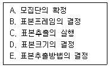
- A → B → E → D → C
- A → D → E → B → C
- D → A → B → E → C
- A → B → D → E → C
(정답률: 51%)
48. A항공사에서 자사의 마일리지 사용자 중 최근 1년 동안 10만 마일 이상 사용자들을 모집단으로 하면서 자사 마일리지 카드 소지자 명단을 표본프레임으로 사용하여 전체에서 표본추출을 할 때의 표본프레임 오류는?
- 모집단이 표본프레임 내에 포함되는 경우
- 표본프레임이 모집단 내에 포함되는 경우
- 모집단과 표본프레임의 일부분만이 일치하는 경우
- 모집단과 표본프레임이 전혀 일치하지 않는 경우
(정답률: 59%)
49. 척도의 종류 중 비율척도에 관한 설명으로 틀린 것은?
- 절대적인 기준을 가지고 속성의 상대적 크기비교 및 절대적 크기까지 측정할 수 있도록 비율의 개념이 추가된 척도이다.
- 수치상 가감승제와 같은 모든 산술적인 사칙연산이 가능하다.
- 비율척도로 측정된 값들이 가장 많은 정보를 포함하고 있다고 볼 수 있다.
- 월드컵 축구 순위 등이 대표적인 예이다.
(정답률: 77%)
50. 의미분화척도(senantic differential scale)에 관한 설명과 가장 거리가 먼 것은?
- 어떠한 개념에 함축되어 있는 의미를 평가하기 위한 방법으로 고안되었다.
- 하나의 개념을 주고 응답자들로 하여금 여러 가지 의미의 차원에서 그 개념을 평가하도록 한다.
- 일반적인 형태는 척도의 양극단에 서로 상반되는 형용사를 배치하여 그 문항들을 응답자에게 제시한다.
- 자료의 분석과정에서 다변량분석과 같은 통계적 처리 과정에 적용하는 것이 용이하지 않다.
(정답률: 56%)
51. 크론바하 알파(Cronbash‘s alpha)에 관한 설명으로 틀린 것은?
- 표준화된 알파라고도 한다.
- 값의 범위는 –1에서 +1까지이다.
- 문항 간 평균상관관계가 증가할수록 값이 커진다.
- 문항의 수가 증가할수록 값이 커진다.
(정답률: 60%)
52. 측정(measurement)에 대한 설명과 가장 거리가 먼 것은?
- 변수에 대한 조작적 정의에 입각해 이루어진다.
- 하나의 변수에 대한 관찰값은 동시에 두 가지 속성을 지닐 수 없다.
- 이론과 현실을 연결시켜주는 매개체이다.
- 경험적으로 관찰 가능한 것을 추상적 개념으로 바꾸어 놓는 과정이다.
(정답률: 69%)
53. 다음은 어떤 표집방법에 관한 설명인가?
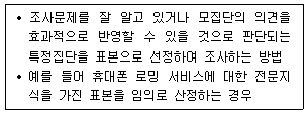
- 편의표집
- 판단표집
- 할당표집
- 층화표집
(정답률: 69%)
54. 표본의 크기를 결정하는 데 고려해야 하는 요인과 가장 거리가 먼 것은?
- 신뢰도
- 조사대상 지역의 지리적 여건
- 모집단위 동질성
- 수집된 자료가 분석되는 범주의 수
(정답률: 61%)
55. 표본크기와 표집오차에 관한 설명으로 옳은 것을 모두 고른 것은?
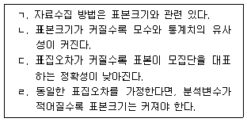
- ㄱ ,ㄴ ,ㄷ
- ㄱ, ㄴ
- ㄴ, ㄹ
- ㄱ, ㄴ, ㄷ, ㄹ
(정답률: 61%)
56. 다음 중 확률표집방법이 아닌 것은?
- 층화표집
- 판단표집
- 군집표집
- 체계적 표집
(정답률: 74%)
57. 연구자가 확률표본을 사용할 것인지, 비확률표본을 사용할 것인지를 결정할 때 고려요인이 아닌 것은?
- 연구목적
- 비용 대 가치
- 모집단위 수
- 허용되는 오차의 크기
(정답률: 26%)
58. 통계적인 유의성을 평가하는 것으로, 속성을 측정해줄 것으로 알려진 기준과 측정도구의 측정 결과인 점수 간의 관계를 비교하는 타당도는?
- 표면타당도(face validity)
- 기준 관련 타당도(criterion-related validity)
- 구성체타당도(construct validity)
- 내용타당도(content validity)
(정답률: 68%)
59. 중앙값, 순위상관관계, 비모수통계검증 등의 통계방법에 주로 활용되는 척도유형은?
- 명목측정
- 서열측정
- 등간측정
- 비율측정
(정답률: 52%)
60. 교육수준은 소득수준에 영향을 미치지 않지만, 연령을 통제하면 두 변수 사이의 상관관계가 매우 유의미하게 나타난다. 이때 연령과 같은 검정요인을 무엇이라 부르는가?
- 억제변수(suppressor validity)
- 왜곡변수(distorter validity)
- 구성변수(component validity)
- 외재적 변수(extraneous validity)
(정답률: 54%)
3과목: 사회통계
61. 표본크기가 3인 자료 x1, x2, x3의 평균
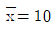
, 분산 s2=100이다. 관측값 10이 추가되었을 때, 4개 자료의 분산 s2은? (단, 표본분산 s2은 불편분산이다.)- 100/3
- 50
- 55
- 200/3
(정답률: 32%)
62. 다음은 두 모집단 N(μ1, σ2), N(μ2, σ2)으로부터 서로 독립된 표본을 추출하여 얻은 결과이다.
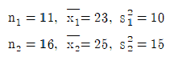
공통분산 s2p의 값은?
- 11
- 12
- 13
- 14
(정답률: 41%)
63. 다음 표는 완전 확률화 계획법의 분산분석표에서 자유도의 값을 나타내고 있다. 반복수가 일정하다고 한다면 처리수와 반복수는 얼마인가?
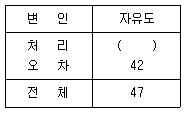
- 처리수 5, 반복수 7
- 처리수 5, 반복수 8
- 처리수 6, 반복수 7
- 처리수 6, 반복수 8
(정답률: 36%)
64. 분산과 표준편차에 관한 설명으로 틀린 것은?
- 분산이 크다는 것은 각 측정치가 평균으로부터 멀리 떨어져 있다는 것을 의미한다.
- 분산도를 구하기 위해 분산과 표준편차는 각각의 편차를 제곱하는 방법을 사용한다.
- 분산은 관찰값에서 관찰값들의 평균값을 뺀 값의 제곱의 합계를 관찰 계수로 나눈 값이다.
- 표준편차는 분산의 값을 제곱한 것과 같다.
(정답률: 56%)
65. 단순회귀모형 y1=β0+β1xi+εi(i=1,2,…, n)에서 최소제곱법에 의한 추정회귀직선
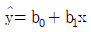
의 설명력을 나타내는 결정계수 r2에 대한 설명으로 틀린 것은?- 결정계수 r2은 총변도
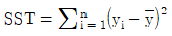
중 추정회귀직선에 의해 설명되는 변동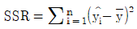
의 비율, 즉 SSR/SST로 정의된다. - x와 y 사이에 회귀관계가 전혀 존재하지 않아 추정회귀직선의 기울기 b1이 0인 경우에는 결정계수 r2은 0이 된다.
- 단순회귀의 경우 결정계수 r2은 x 와 y의 상관계수 rxy와는 직접적인 관계가 없다.
- x와 y의 상관계수 rxy는 추정회귀계수 b1이 음수이면 결정계수의 음의 제곱근 -√r2과 같다.
(정답률: 52%)
66. 회귀분석에 관한 설명으로 틀린 것은?
- 회귀분석은 자료를 통하여 독립변수와 종속변수 간의 함수관계를 통계적으로 규명하는 분석방법이다.
- 회귀분석은 종속변수의 값 변화에 영향을 미치는 중요한 독립변수들이 무엇인지 알 수 있다.
- 단순회귀선형모형의 오차(εi)에 대한 가정에서 εi~N(0,σ2)이며, 오차는 서로 독립이다.
- 최소제곱법은 회귀모형의 절편과 기울기를 구하는 방법으로 잔차의 합을 최소화시킨다.
(정답률: 37%)
67. 다음 분산분석표에 관한 설명으로 틀린 것은?(오류 신고가 접수된 문제입니다. 반드시 정답과 해설을 확인하시기 바랍니다.)
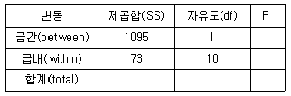
- F 통계량의 값은 0.15이다.
- 두 개의 집단의 평균을 비교하는 경우이다.
- 관찰치의 총 개수는 12개이다.
- F 통계량이 임계값보다 작으면 각 집단의 평균이 같다는 귀무가설을 기각하지 않는다.
(정답률: 44%)
68. 중회귀분석에서 회귀계수에 대한 검정결과가 아래와 같을 때의 설명으로 틀린 것은? (단, 결정계수는 0.891이다.)
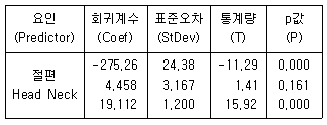
- 설명변수는 Head와 Neck이다.
- 회귀변수 중 통계적 유의성이 없는 변수는 절편과 Neck이다.
- 위 중회귀모형은 자료 전체의 산포 중에서 약 89.1%를 설명하고 있다.
- 회귀방정식에서 다른 요인을 고정시키고 Neck이 한 단위 증가하면 반응값은 19.112가 증가한다.
(정답률: 39%)
69. 어떤 공장에서 생산하고 있는 진공관은 10%가 불량품이라고 한다. 이 공장에서 생산되는 진공관 중에서 임의로 100개를 취할 때, 표본불량률의 분포는 근사적으로 어느 것을 따르는가? (단, N은 정규분포를 의미한다.)
- N(0.1, 9×10-4)
- N(10, 9)
- N(10, 3)
- N(0.1, 3×10-4))
(정답률: 23%)
70. 통계적 가설검정을 위한 검정통곗값에 대한 유의확률(p-value)이 주어졌을 때, 귀무가설을 유의수준 α로 기각할 수 있는 경우는?
- p-value α
- p-value < α
- p-value ≥ α
- p-value > 2α
(정답률: 61%)
71. 동전을 던질 때 앞면이 나올 확률을 0.4라고 할 때 동전을 세 번 던져서 두 번은 앞면이, 한 번은 뒷면이 나올 확률은?
- 0.125
- 0.192
- 0.288
- 0.375
(정답률: 56%)
72. 추정량이 가져야 할 바람직한 성질이 아닌 것은?
- 편의성(biasness)
- 효율성(efficiency)
- 일치성(consistency)
- 충분성(sufficiency)
(정답률: 58%)
73. 화장터 건립의 후보지로 거론되는 세 지역의 여론을 비교하기 위해 각 지역에서 500명, 450명, 400명을 임의출하여 건립에 대한 찬성여부를 조사하고 분할표를 작성하여 계산한 결과 검정통계량의 값이 7.55이었다. 유의수준 5%에서 임계값과 검정 결과가 알맞게 짝지어진 것은? (단,
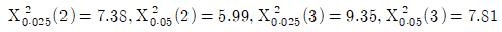
이다.)- 7.38, 지역에 따라 건립에 대한 찬성률에 차이가 있다.
- 5.99, 지역에 따라 건립에 대한 찬성률에 차이가 있다.
- 9.35, 지역에 따라 건립에 대한 찬성률에 차이가 없다.
- 7.81, 지역에 따라 건립에 대한 찬성률에 차이가 없다.
(정답률: 36%)
74. N(μ, σ2)인 모집단에서 표본을 임의추출할 때 표본평균이 모평균으로부터 0.5σ 이상 떨어져 있을 확률이 0.3174이다. 표본의 크기를 4배로 할 때, 표본평균이 모평균으로부터 0.5σ 이상 떨어져 있을 확률은? (단, Z가 표준정규분포를 따르는 확률변수일 때, 확률 P(Z＞x)은 다음과 같다.)
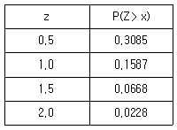
- 0.0456
- 0.1336
- 0.6170
- 0.6348
(정답률: 21%)
75. 행의 수가 2, 열의 수가 3인 이원교차표에 근거한 카이제곱 검정을 하려고 한다. 검정통계량의 자유도는 얼마인가?
- 1
- 2
- 3
- 4
(정답률: 58%)
76. 다음 중 이항분포에 관한 설명으로 틀린 것은?
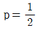
이면 좌우대칭의 형태가 된다.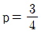
이면 왜도가 음수(-)인 분포이다.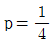
이면 왜도가 0이 아니다.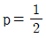
이면 왜도는 양수(+)인 분포이다.
(정답률: 42%)
77. 다음 중 제1종 오류가 발생하는 경우는?
- 참이 아닌 귀무가설(H0)을 기각하지 않을 경우
- 참인 귀무가설(H0)을 기각하지 않을 경우
- 참이 아닌 귀무가설(H0)을 기각할 경우
- 참인 귀무가설(H0)을 기각할 경우
(정답률: 59%)
78. X는 정규분포를 따르는 확률변수이다. P(X＜10)=0.5일 때, X의 기댓값은?
- 8
- 8.5
- 9.5
- 10
(정답률: 48%)
79. 독립변수가 k개인 중회귀모형 y=Xβ+ε에서 회귀계수벡터 β의 추정량 b의 분산-공분산 행렬 Var(b)은? (단, Var(ε)=σ2I)
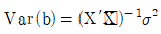
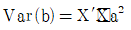
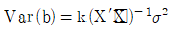
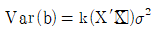
(정답률: 30%)
80. 명중률이 75%인 사수가 있다. 1개의 주사위를 던져서 1 또는 2의 눈이 나오면 2번 쏘고, 그 이외의 눈이 나오면 3번 쏘기로 한다. 1개의 주사위를 한 번 던져서 이에 따라 목표물을 쏠 때, 오직 한 번만 명중할 확률은?
- 3/32
- 5/32
- 7/32
- 9/32
(정답률: 40%)
81. 어떤 처리 전후의 효과를 분석하기 위한 대응비교에서 자료의 구조가 다음과 같다.
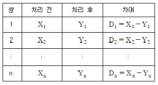
일반적인 몇 가지 조언을 가정할 때 처리 이전과 이후의 평균에 차이가 없다는 귀무가설을 검정하기 위한 검정통계량
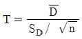
은 t분포를 따른다. 이때 자유도는? (단,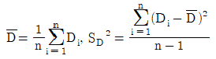
이다.)- n-1
- n
- 2(n-1)
- 2n
(정답률: 52%)
82. 다음 중 분산분석표에 나타나지 않는 것은?
- 제곱합
- 자유도
- F-값
- 표준편차
(정답률: 57%)
83. 정규분포를 따르는 모집단의 모평균에 대한 가설 H0:μ=50 VS H1:μ＜50을 검정하고자 한다. 크기 n=100의 임의표본을 취하여 표본평균을 구한 결과
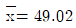
를 얻었다. 모집단의 표준편차가 5라면 유의확률은 얼마인가? (단, P(Z≤-1.96)=0.025, P(Z≤-1.96)이다.)- 0.025
- 0.⑤
- 0.95
- 0.975
(정답률: 37%)
84. 평균이 μ, 분산이 σ2인 모집단에서 크기 n의 임의표본을 반복추출하는 경우, n이 크면 중심극한정리에 의하여 표본합의 분포는 정규분포를 수렴한다. 이때 정규분포의 형태는?
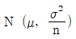
- N(μ, nσ2)
- N(nμ, nσ2)
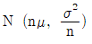
(정답률: 21%)
85. 다음 표와 같은 분포를 갖는 확률변수 X에 대한 기댓값은?
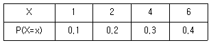
- 3.0
- 3.3
- 4.1
- 4.5
(정답률: 62%)
86. 반복수가 동일한 일원배치법의 모형 Yij=μ+αo+εij, ,i=1,2,…,k,j=1,2,…n에서 오차항 εij에 대한 가정이 아닌 것은?
- 오차항 εij는 서로 독립이다.
- 오차항 εij의 분산은 동일하다.
- 오차항 εij는 정규분포를 따른다.
- 오차항 εij는 자기상관을 갖는다.
(정답률: 52%)
87. 어떤 자격시험의 성적은 평균 70, 표준편차 10인 정규분포를 따른다고 한다. 상위 5%까지를 1등급으로 분류한다면, 1등급이 되기 위해서는 최소한 몇 점을 받아야 하는가? (단, P(Z≤1.645)=]0.95,Z~N(0,1)이다.)
- 86.45
- 89.60
- 90.60
- 95.0
(정답률: 42%)
88. 초기하분포와 이항분포에 대한 설명으로 틀린 것은?
- 초기하분포는 유한모집단으로부터의 복원추출을 전제로 한다.
- 이항분포는 베르누이 시행을 전제로 한다.
- 초기하분포는 모집단의 크기가 충분히 큰 경우 이항분포로 근사될 수 있다.
- 이항분포는 적절한 조건 하에서 정규분포로 근사될 수 있다.
(정답률: 33%)
89. 어느 중학교 1학년의 신장을 조사한 결과, 평균이 136.5㎝, 중앙값은 130.0㎝, 표준편차가 2.0㎝이었다. 학생들의 신장의 분포에 대한 설명으로 옳은 것은?
- 오른쪽으로 긴 꼬리를 갖는 비대칭분포이다.
- 왼쪽으로 긴 꼬리를 갖는 비대칭분포이다.
- 좌우 대칭분포이다.
- 대칭분포인지 비대칭분포인지 알 수 없다.
(정답률: 56%)
90. 어느 정당에서는 새로운 정책에 대한 찬성과 반대를 남녀별로 조사하여 다음의 결과를 얻었다.
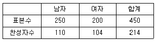
남녀별 찬성률에 차이가 있다고 볼 수 있는가에 대하여 검정할 때 검정통계량을 구하는 식은?
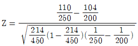
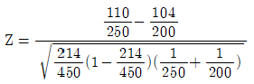
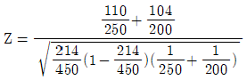
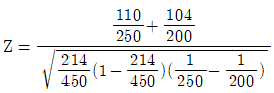
(정답률: 44%)
91. 통계학 과목을 수강한 학생 가운데 학생 10명을 추출하여, 그들이 강의에 결석한 시간(X)과 통계학점수(Y)를 조사하여 다음 표를 얻었다.
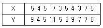
단순 선형 회귀분석을 수행한 다음 결과의 ( )에 들어갈 것으로 틀린 것은?
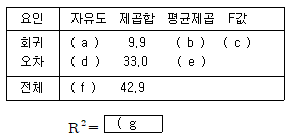
- a=1, b=9.9
- d=8, e=4.125
- c=2.4
- g=0.7
(정답률: 45%)
92. 초등학생과 대학생의 용돈의 평균과 표준편차가 다음과 같을 때 변동계수를 비교한 결과로 옳은 것은?
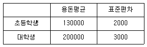
- 초등학생 용돈이 대학생 용돈보다 상대적으로 더 평균에 밀집되어 있다.
- 대학생 용돈이 초등학생 용돈보다 상대적으로 더 평균에 밀집되어 있다.
- 초등학생 용돈과 대학생 용돈의 변동계수는 같다.
- 평균이 다르므로 비교할 수 없다.
(정답률: 40%)
93. 자료의 산술평균에 대한 설명으로 틀린 것은?
- 이상점의 영향을 받지 않는다.
- 편차들의 합은 0이다.
- 분포가 좌우대칭이면 산술평균과 중앙값은 같다.
- 자료의 중심위치에 대한 측도이다.
(정답률: 59%)
94. 표본평균에 대한 표준오차의 설명으로 틀린 것은?
- 표본평균의 표준편차를 말한다.
- 모집단의 표준편차가 클수록 작아진다.
- 표본크기가 클수록 작아진다.
- 항상 0 이상이다.
(정답률: 54%)
95. A약국의 드링크제 판매량에 대한 표준편차(σ)는 10으로 정규분포를 이루는 것으로 알려져 있다. 이 약국의 드링크제 판매량에 대한 95% 신뢰구간을 오차한계 0.5보다 작게 하기 위해서는 표본의 크기를 최소한 얼마로 하여야 하는가? (단, 95% 신뢰구간의 Z0.025=1.96)
- 77
- 768
- 784
- 1537
(정답률: 30%)
96. 피어슨 상관관계 값의 범위는?
- 0에서 1 사이
- -1에서 0 사이
- -1에서 1 사이
- -∞에서 +∞ 사이
(정답률: 58%)
97. 두 변수 간의 상관계수 값으로 옳은 것은?
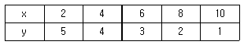
- -1
- -0.5
- 0.5
- 1
(정답률: 22%)
98. 5개의 자료값 10, 20, 30, 40, 50의 특성으로 옳은 것은?
- 평균 30, 중앙값 30
- 평균 35, 중앙값 40
- 평균 30, 최빈값 50
- 평균 25, 최빈값 10
(정답률: 69%)
99. 단순회귀모형 yi=β0+β1xi+εi, εi~N(0,σ2)(i=1,2,…,n)에서 최소제곱법에 의해 추정된 회귀직선을
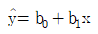
라 할 때, 다음 설명 중 옳지 않은 것은? (단,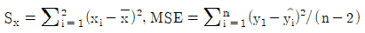
이다.)(오류 신고가 접수된 문제입니다. 반드시 정답과 해설을 확인하시기 바랍니다.)- 추정량 b1은 평균이 β1이고, 분산이 σ2/Sxx인 정규분포를 따른다.
- 추정량 b0은 회귀직선의 절편 β0의 불편추정량이다.
- MSE 는 오차항 εi의 분산 σ2에 대한 불편추정량이다.
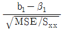
는 자유도 각각 1, n-2인 F-분포 F(1,n-2)를 따른다.
(정답률: 27%)
100. A회사에서 생산하고 있는 전구의 수명시간은 평균이 μ=800(시간)이고, 표준편차가 σ=40(시간)이라고 한다. 무작위로 이 회사에서 생산한 전구 64개를 조사하였을 때 표본의 평균수명시간이 790.2시간 미만일 확률은? (단,z0.0⑤=2.58, z0.025=1.96, z0.⑤ =1.645이다.)
- 0.01
- 0.025
- 0.5
- 0.10
(정답률: 51%)